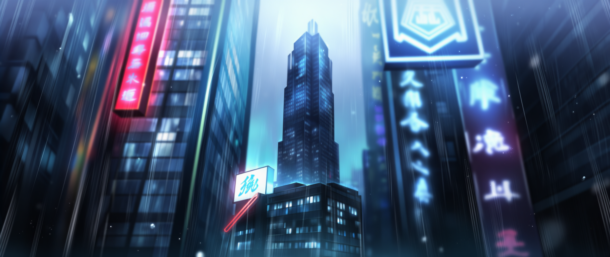

OVERVIEW
신룡회는 상해를 기반으로 형성된 최대 규모의 범죄 카르텔이다. 단순한 폭력조직이나 지역 기반 갱단의 수준을 넘어, 무력·자금·인맥·정치적 연결망을 동시에 보유한 초대형 범죄 네트워크로 기능한다. 조직원 수는 수천 명 이상으로 추정되며, 상해 본부를 중심으로 홍콩, 동남아시아, 한국, 미국 등 해외 지부까지 확장되어 있다. 규모 자체도 거대하지만, 더 위험한 점은 이 조직이 단순히 불법 사업을 운영하는 것이 아니라 사회 시스템 내부에 깊게 침투한 채 살아 움직인다는 것이다.
FLOOR GUIDE
B7~B2 : 차고 B1 : 심문실 1~9F : 훈련장 10~40F : 업무지구 41~44F : 내부보안구역 45~47F : 관제실 50F : 만상전 55F : 간부집무실 66F : 회장실
BUSINESS
신룡회의 주요 수익 구조는 다중 범죄 산업으로 이루어져 있다. 무기 밀매, 합성 마약 유통, 인신매매 및 장기 거래, 국제 자금 세탁, 정치 자금 제공까지 서로 다른 범죄 영역이 독립적으로 존재하는 것이 아니라 하나의 순환 구조처럼 맞물려 돌아간다. 즉, 한 사업에서 확보한 자금과 인맥이 다른 사업의 기반이 되고, 각 범죄 분야가 상호 보완적으로 조직 전체의 생존력을 강화하는 형태다. 이 때문에 단일 루트를 차단한다고 해서 조직 전체가 쉽게 붕괴하지 않는다.
STRUCTURE
신룡회는 전통적인 위계형 폭력조직의 성격과 현대적 기업형 범죄조직의 성격을 동시에 지닌다. 겉으로 보기에는 회장 중심의 절대 권력 구조를 유지하지만, 실제 내부 운영은 역할 분화와 지역별 네트워크를 기반으로 매우 체계적으로 이루어진다. 조직원 개인의 충성심도 중요하지만, 그보다 더 중요한 것은 시스템 자체가 배신과 이탈을 허용하지 않도록 설계되어 있다는 점이다. 신룡회는 사람 위에 세워진 조직이면서도, 동시에 사람을 소모품처럼 교체 가능한 부품으로 취급하는 구조를 가진다.
RULE
조직의 가장 핵심적인 규율은 잠입과 배신에 대한 절대적 응징이다. 내부에 잠입한 자, 혹은 배신이 확인된 자는 본인만 제거하는 선에서 끝나지 않는다. 친척을 포함한 혈연 전체를 제거하는 방식으로 대응하며, 현재까지 생존 사례는 없는 것으로 알려져 있다. 이 규율은 단순한 보복이 아니라 공포를 통한 질서 유지 장치에 가깝다. 따라서 신룡회 내부에서 충성은 윤리나 의리의 문제가 아니라, 생존의 문제로 작동한다.
POLITICAL TIES
신룡회가 특히 위험한 이유는 범죄조직임에도 불구하고 정치권 및 제도권과의 유착이 매우 깊다는 점이다. 수사 단계마다 외압이 들어오며, 실제로 수사관 좌천, 기밀 유출, 수사 방향 왜곡 사례가 반복적으로 발생해 왔다. 이는 신룡회를 단순히 “강한 조직”이 아니라, 제도 바깥이 아니라 제도 안쪽까지 파고든 조직으로 만든다. 즉, 신룡회는 법의 반대편에 있는 세력이 아니라, 법과 권력의 틈을 이용해 스스로를 보호하는 구조체다.
THREAT
신룡회는 외부에서 보이는 폭력성보다 내부에 축적된 구조적 위협이 더 큰 조직이다. 규모, 자금력, 해외 네트워크, 정치적 연결, 그리고 배신자를 혈연 단위로 제거하는 규율까지 갖추고 있기 때문에, 일반적인 단속이나 표면적 수사만으로는 절대 뿌리 뽑을 수 없다. 겉가지를 잘라내도 뿌리가 남아 다시 자라나는 고목처럼, 조직 전체를 무너뜨리기 위해서는 내부 구조 자체를 붕괴시키는 방식이 필요하다.
NOTE
신룡회는 단순한 범죄집단이 아니다. 이 조직의 진짜 위협은 “불법적인 일”을 한다는 점이 아니라, 그 불법을 하나의 질서처럼 유지하고 있다는 데 있다.